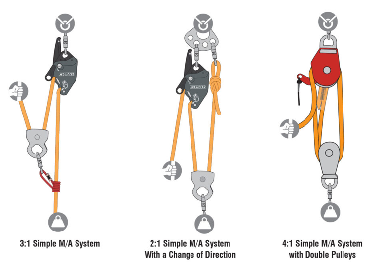
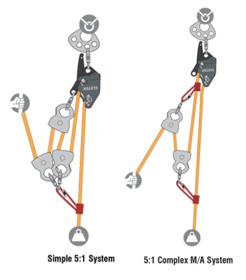
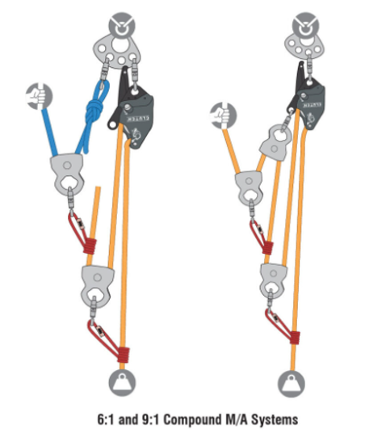

- Response preparation
- SITREP – situation report from originator
- SMEAC is used to deliver orders to the rescue team
- Situation – derived from SITREP, defines casualty numbers and medical status, any risks that may impede rescue
- Mission – single purpose statement about how the rescue will be performed, repeated twice
- Execution – defines who is doing what task
- Admin/logistics – defines equipment required etc
- Command, control and communication – defines who’s OIC, 2IC, radio channels and other comms
- Equipment
- Fall arrest systems - lanyards, rail etc
- Stretchers - basket stretcher or roll up stretcher
- Bridle - adjustable buckles allow you to adjust the angle of the stretcher
- Larkin frame - used at the edge of cliff/hole/pit. Leans over
- Tripod - used above a manhole in a confined space rescue, use roll up stretcher to get patient out
- GOTCHA kit - when casualty is suspended in the air, you use a telescopic pole to connect them to a pre-rigged haulage system, can raise or lower them out
- Hardware – Karabiners, descenders, ascenders, pulleys
- Karabiners must be double or triple action, loaded longways, screw type should be facing down such that it wont be loosened by gravity
- In line descenders – friction devices that allow rope to pass through – ensure loaded in correct direction
- Ascenders – one way travel on a rope line, for single person ascent or as a rope grab device in hauling systems
- Pulleys – reduce rope friction, allow redirection, lower stretchers and/or provide mechanical advantage, can be single, double or triple sheave
- Software
- Rope – kern(core)mantle(sheath) construction. Min 11mm max 13mm diameter. 3000kg breaking strain, 8:1 safety factor, SWL fo 375kg, static type. Dynamic (stretchy) rope is not used for rescue. If site used 13mm rope, hardware MUST be for 13mm. must be inspected before, during, after use and at 6 monthly intervals. Edge protection should be used to prevent damage to rope, from sharp edges/friction
- Harnesses – any attachments for abseiling/belaying must be made to front attachment point (belay loop), waist loops are only designed to hang ancillary equipment, not the persons weight
- Slings – used in conjunction with karabiners to attach to an anchor, slings should not be choked
- Scene assessment
- Rescue scene reconnaissance - check maps, weather etc on route
- Location and condition of casualties – triage, first aid
- Risk assessment – identify hazards to team and to casualty, put controls in place
- Scene management and control – secure scene with cones, tape, barricading, preserve the scene for later incident investigation, access to scene, move non essential people to a waiting area
- Establishing and maintaining communications – using voice, hand signals, radio, standard calls should be known by team such as ‘ready on safety’, ‘ARCHER(gear) check’, ‘check complete’, ‘ready on rope/ready on main’, ‘take the strain’, ‘give some slack’, ‘raise’, ‘below’. Hand signals: finger pointed up moving in circular motion means raise, while hand full extended, palm down, motioning side to side means lower. Hand out means stop.
- Establish a rescue system
- Pre-made 4:1 to be used with the tripod in vertical rescue over manhole, use roll up stretcher to fit through manhole with spreader bar
- ARCHER checks
- Anchors - most common failure point. Slings should ideally be at less than 90deg angle and NEVER more than 120deg if load is shared between 2 anchor points. Anchor points tested with 2 people pulling/using body weight.
- Natural – trees, rocks
- Man-made/structural – buildings, beams, columns
- Improvised – star pickets, buried tyres
- Vehicles – Firetruck wheels, keys removed, parked perpendicular, wheels chocked, brake on
- Ropes and reeving – check condition, ropes aren’t crossed, reeved through descender correctly, check for edge protection
- Connections – karabiners, gates closed and aligned properly, gravity should tighten
- H - 4H’s - Helmet, harness, hands (gloves), hooves (shoes)
- Equipment – equipment attached, secured correctly, may need grab bag items or stretcher, equipment tested under load
- Ready on rope – ‘ready on main’ + ‘ready on safety’
- Rescue techniques:
- Belaying – belay line is the safety line, should always have a little slack, serves as a back up. Is always required.
- Abseiling – going down a rope rather than the rope moving, pace is controlled by the person abseiling, using descender (clutch brake) to gradually fall down. Don’t go too fast as this can heat/damage the rope
- Lowering – achieved by inverting a rigged descender that is attached to a secure anchor point. Someone else lowers the rescuer/casualty, tag lines can also be used from ground to control casualty
- Hauling – main haul line pulled through the in line descender and usually in a mechanical advantage pulley system with an ascender. Slack must be taken up by the person on the belay (safety) line as haulage is occurring. Common is 3:1 or 5:1 mechanical advantage
- Mechanical advantage
- Pulleys that are permanently anchored or that change directions do NOT provide mechanical advantage, mechanical advantage is only gained by travelling pulleys
- Calculating mechanical advantage – count the number of ropes that are supporting the load including the haulage line, but only if it is directed from the floating pulley, therefore pulling from a direction of mechanical advantage
- mechanical disadvantage – direction when pulling towards the load, whereas mechanical advantage is pulling away from the load



- Perform rescue
- Hygiene precautions – potential bodily fluids, wear nitrile gloves under rope gloves
- Access casualties – belaying, abseiling, lowering, hauling
- Casualty preparation – identify potential hazards to casualty, provide reassurance, prepare for removal, first aid treatment only to preserve life whilst on site, prepare them for removal. Basket or roll up stretcher may be used, with bridal or spreader bar
- Casualty handling – care with manual handling, proper technique, lift with legs. With suspected spinal, support neck/head and restrict movement, cross casualties arms and put stretcher to their side, then roll them to their side and slide the stretcher underneath them and roll them back onto it, secure casualty to stretcher with straps provided, rig up bridle.
- Casualty removal – prepare to lift, lift. Raise or lower stretcher to safety. Escort the stretcher to prevent swaying, comfort casualty, or at least use tag line. Be mindful of potential orthostatic shock (suspension trauma) where casualty has been suspended in a body harness for a prolonged period (5-30mins), as blood is pooling in lower body or casualty who are suspended and motionless, causing low blood pressure and possible unconsciousness. Can prevent this by moving legs in harness, push against foot holds, raise legs as high as possible, tilt back to become horizontal. Treatment is to administer oxygen, remove harness, lie casualty down
- Conclude Rescue Operations
- Debriefing – discuss what went well, what could be improved, and any lessons learned
- Equipment check – inspect all equipment for damage and ensure it is properly stored. Ropes may need to be washed, if so use rope wash in sink, air dry. If hardware dropped from height, place it OOS.
- Debriefing – discuss what went well, what could be improved, and any lessons learned, psychological review, revision and implementation of techniques/procedures
- Documentation – document the rescue operation, dated/timed contemporaneous notes, amendments to be initialled, retained for 7 years including any incidents or injuries